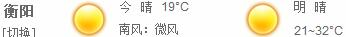

|  |
汽车场地赛版块 |
汽车道路赛版块 |
摩托车大赛版块 |
自行车大赛版块 |
| 主要赛事:方程式汽车赛 赛车必须依照国际汽车联合会制定颁发的车辆技术规则规定的程式制造，包括车体结构、长度和宽度、最低重量、发动机工作容积、汽缸数量、油箱容量、电子设备、轮胎的距离和大小等) 各级方程式赛车的制造程式不同。属于方程式汽车比赛的项目有：F-1、 F-3000、 F-3、亚洲方程式、无限方程式、福特方程式、雷诺方程式、卡丁车方程式等。一级方程式赛车(F1/Formula 1) 使用的赛车是四轮外露的单座位纯跑道用方程式赛车, 外形与一级方程式赛车相类似，但体积较小, 最低重量为455公斤, 配备4汽缸、工作总容积为2公升的自然吸气式汽油发动机，输出功率约170马力。 方程式3000(F3000/Formula 3000) 限在亚洲地区开展。使用的赛车是四轮外露的单座位纯跑道用方程式赛车, 车身规格与三级方程式相似, 配备1台" 福特 "4汽缸工作总容积为2公升的自然吸气式汽油发动机, 输出功率约160马力。
耐久赛(Grand Touring Car) 分方程式卡丁车、国际A、B、C、E级和普及级六类， 共12个级别。使用轻钢管结构，操纵简单，无车体外壳，装配100CC、 125CC或 250CC汽油发动机的4轮单座位微型赛车, 重心低，在曲折的环型路线上行驶，比赛速度感强。 卡丁车是世界方程式赛车的最初级形式, 始于1940年。由于许多著名的一级方程式赛手都是从卡丁车起步的，因此卡丁车被视为“ F- 1”的摇篮。 |
主要赛事 拉力赛(Rally) 汽车道路比赛项目之一。是在一个国家的公路和自然道路上举行的允许对该国进行考察的汽车比赛。经过几个国家的领土、总长度超过 10,000公里或跨洲的比赛称马拉松越野赛。除国际汽联特别批准外，越野赛的赛程不得超过15天，比赛必须在白天进行。采用单车发车方式。比赛每经过10个阶段后至少休息 18个小时。 每阶段的行驶距离自定, 但每个赛段的最大长度, 越野赛规定不超过350公里, 马拉松越野赛规定不超过800公里。必须使用在国际汽联注册的全轮驱动汽车参赛。 1996年国际汽联首次对越野赛实行世界杯赛制，其中较著名的比赛有巴黎至达喀尔越野赛、突尼斯国际汽车赛、巴黎至莫斯科至北京马拉松汽车越野赛、阿拉伯联合酋长国沙漠挑战赛等。 |
主要赛事 GP,SBK,世界摩托车耐力赛这三大赛事基本代表了摩托赛事的最高水平 GP大赛历史较早，公认是最高级别的摩托赛事，几十年来冠军基本被日系四大车队和意大利的杜卡迪瓜分；SBK的意义在于他代表了民用版赛车的最高水平，GP大赛的摩托赛车就像F1，为了追求速度牺牲了其他一切属性，例如F1,它变态到了为了减轻重量，采用极轻极不耐久的材料造发动机，一般F1赛车发动机只有不到2000公里的使用时间（一次F1大赛包括练习、排位和正式比赛差不多是1000公里），GP大赛的赛车也有类似的设计，基本上跑完一次大赛，整车就要大修，大赛用的赛车民间是买不到的。而SBK大赛基本上就相当于民用版超级跑车略加改装的比赛。 所以SBK大赛虽然历史没有GP大赛悠久，车也没有GP大赛快，但是也很受欢迎，因为他更贴近大众。近年来SBK大赛的冠军，杜卡迪包了一半以上，所以人称杜卡迪为“红衣大魔鬼”，剩下一半被本田和雅马哈瓜分。 前面两项大赛代表了速度的极致，而世界摩托车耐力赛代表了耐力的极致，要求车手24小时不停车在野外复杂的地形比赛（可以换人、加油），对车的耐久性要求极高。 这项大赛最牛的是奥地利的KTM（不是中国的KTM，这个是山寨的名字）。 |
主要赛事: 世界公路自行车锦标赛,世界最高水平的公路自行车赛事,由 国际自行车联盟举办。 公路自行车世锦赛的比赛项目包括男女公路赛和计时赛，同时还设立男子23岁以下组和男女青年组比赛。奥运会的公路自行车项目共包括4个小项，分别是男女个人公路赛和男女个人计时赛。现行公路自行车世锦赛的比赛为每年一届。世界上在公路自行车项目中处于领先水平的主要是欧洲选手和美国、澳大利亚等国的运动员。中国选手与上述国家运动员相比水平差距较大，未曾在国际大赛上取得过突出成绩。由于比赛距离较长，参赛人数众多，公路自行车各项目都是直接进行决赛。 公路自行车赛 公路自行车赛是一项自行车赛事，使用公路自行车。运动员从一地出发，沿公路骑行，最先到达目的地者获胜。公路自行车赛在欧洲非常普及，较流行的国家有比利时、法国、荷兰、意大利、卢森堡、西班牙、瑞士等国。1896年，希腊雅典举行的第一届夏季奥运会上就有该项目。 世界上著名的公路自行车赛有环法自行车赛、环西自行车赛、环意自行车赛等。 环法自行车赛 环法自行车赛是公路自行车运动中规模最大、影响最广的国际自行车大赛。每年7月举行，每次赛期23天，总数21段，平均赛程超过3500公里（约2200英里）。整个赛程每年不一，但都是环绕法国一周，经常也出入周边的国家。近几十年来，终点总设在巴黎的香榭丽舍大道。比赛全程分成许多段，从一个城镇到下一个，每一段分别计时排名。所有段成绩累计起来决定每一位赛手的总成绩。冠军为各段时间累计最少者。比赛中，截至上一赛段总时间最短的车手，将穿着著名的黄色领骑衫。 环西自行车赛 环西自行车赛是一项在西班牙举办的公路自行车比赛，为三大自行车赛之一。环西自行车赛为期3周。环西自行车赛首次举办于1935年。从1955年开始，成为年度赛事。迄今为止，西班牙车手赢得了29个总冠军，法国车手获得9次冠军。 环意自行车赛 环意自行车赛是公路自行车运动界中的年度大赛，也可说是目前最受重视的的自行车公路赛，累计总长度超过3000公里。从1909年起开始，除被两次世界大战中止外，每年夏季五～六月均会举办，紧接在环西自行车赛与环法自行车赛之后，成为夏季自行车赛的高潮而结束。 |